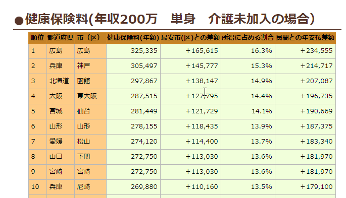
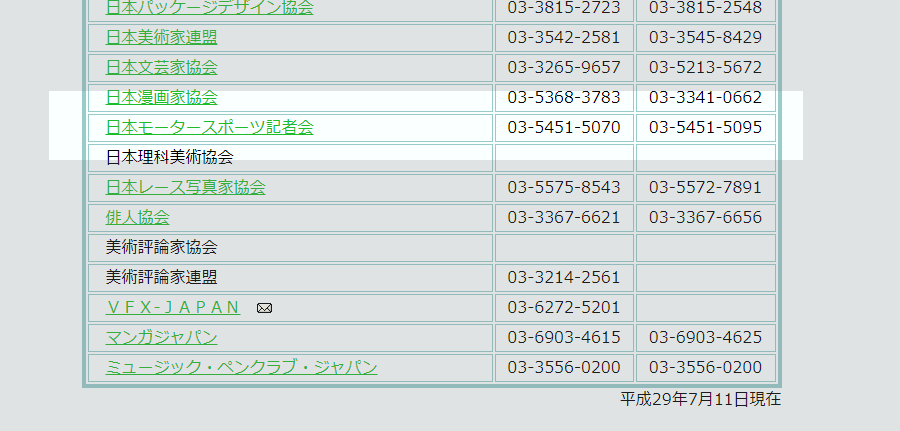
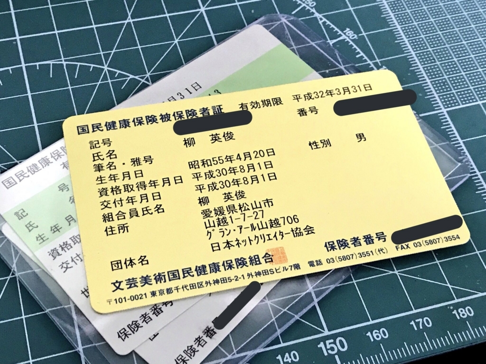
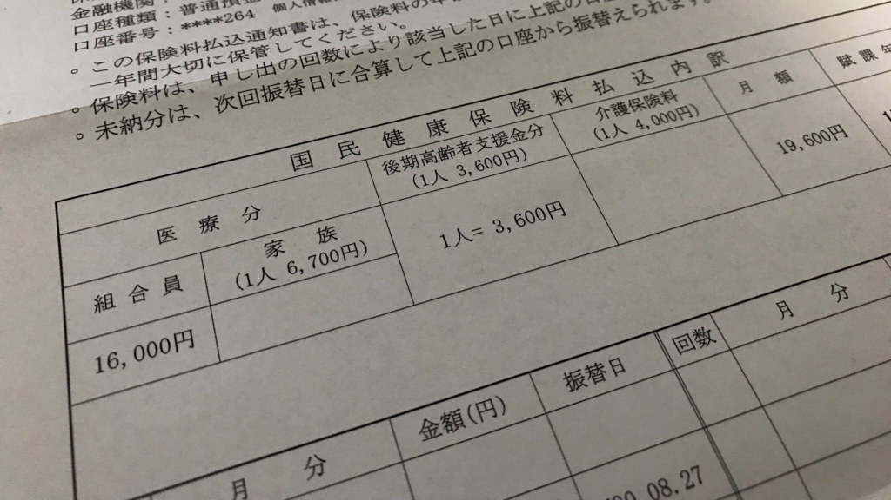

7月30日：JNCA 日本ネットクリエイター協会（と文芸美術国民健康保険組合）に入った
公開日：
愛媛県松山市はたいへん住みやすい街だと思うんだけど、唯一のネックが国民健康保険料。実は割と高めらしい。

from: 国民健康保険料 高い自治体(市、区) ランキング
健康保険料は収入や世帯構成によってだいぶ変わるので比較は難しいのだけど（今もこのランキング通りとも限らない）、体感的にも結構高いなぁ、と感じる。松山市によると（あぁ、投書して聞いてみたんだよ）「頑張ってあれこれいじって負担が少なくなるように頑張ってる（意訳」とのことだけど……健康保険料のことを考えると体調が悪くなる。健康保険料が一番健康に悪いって何の冗談なんだよって感じ。
んなわけで、できれば国民健康保険を抜けて、保険料が安いと評判の文芸美術国民健康保険組合に入れたらいいなぁ、とかねてから思っていたのだけど、これに入るには保険組合に加盟している組合に入らなければならない。文筆家やコピーライター、デザイナーなど、いろんな組合があるのだが、自分が入れそうなのはなかった。あんまり「文芸」とか「美術」とかに縁のない仕事だしな……などと思っていたのですが！

日本モータースポーツ記者会……「記者」ってあんまり「文芸」やら「美術」やらっていうイメージはないんだけど、イケるんだなぁ。というわけで、自分もチャレンジしてみた。テキストかいて暮らしてる点では、わしも「記者」もたいして変わらんじゃろ。
JNCA 日本ネットクリエイター協会
加盟組合の中で、唯一自分が入れそうだったのが「JNCA 日本ネットクリエイター協会」。まぁ、オンラインでなんか謎の活動してるしな、フリー素材とか。そのうち YouTuber をやらされる可能性もなくもないし、ネットクリエイターを自称してもよかろうと思う。
というわけで、書類を整えて「入れてやでー」とお願いしたら、あっさり「ええやでー」と返事が返ってきた。ただし、「文美に入れるかは保証しない」という。つまり、入会金＋年会費＝3万円を支払えば、文美に入れるかどうかのガチャを無料で引けるわけだ。3万円といえば、ヤクルト400およそ350本分……ちょっと厳しいけれど、やってみる価値はある。
文芸美術国民健康保険組合
その週のうちに、JNCA から文美ガチャの書類が届く。書類仕事が大嫌いな僕だけど、今回ばかりは本気で取り組んで次の日にはポストに投函。しばらくすると、お姉さんから電話がかかってきた。
「お聞きしたいことが……」
「なんなんやで( ^)o(^ )？」
「確定申告の書類で、職業欄が情報サービスなどになっているのですが……そういう場合はお断りしています」
「ふぁー！( ^)o(^ )」
freee で確定申告の書類を作るとき、あんまり考えてなかったんだが……文筆家あたりにしとけばよかった。けれど、日頃やってる謎の無職の仕事を丁寧に説明するとわかっていただけたみたいで（成果物をコピーして送ってあって、そっちは問題なかったみたい）、来年の確定申告のときに職業欄を「文筆家」にするということで決着がついた。まぁ、毎日かなりの文字数を書いて暮らしてるから、「文筆家」でも間違いではあるまい……うぅぅ……まさか「文筆家」を名乗ることになるとは……もうちょっと文章力ないと恥ずかしいな。ってか、マジでちゃんと小説の一本でも書いて Amazon で売ってみるか、「文筆家」らしく。
それはともかく、無事審査も通って、先日黄色い健康保険証がきた。

ちょっと面白いのは、保険証に雅号・ペンネームを載せられること。なにか書いてもらおうかなとも思ったけど、今回はパスした。「だるやなぎ」では格好がつかないしなぁ……なにか「画狂老人卍」みたいなカッコいい雅号を思いつくまでは空欄にしておこうと思う。
文美の審査にあたって注意しなければならないのは、アフィリエイトブログみたいな「広告」で収入を得ているだけではダメってこと。納品した報酬が主な収入である必要がある。なので、どこかの出版社かメディアと取引がないと厳しいんじゃないかな？ まぁ、やってみなきゃわからないけど。
で、結局どれぐらい安くなったのか

文美の保険料は「16,000円＋3,600円（後期高齢者支援金分）＝19,600円」（最近また高くなったらしい、後期高齢者支援金分のせいだな）。年間で、235,200円……だいたい10万円以上、2/3 ぐらいに支出を圧縮できた。はぁ……不安定な身分だから、安いのはすげえ助かる！ 保険証を受け取ったその日に市役所に行って、さっそく保険の切り替え手続きも済ませた（松山市役所の場合、別館の3Fに国民健康保険を扱う部署がある）。お祝いにビールと宅配寿司でお祝いした。小学3年の頃、交通事故で死にかけて以来、医者とは無縁の生活で、薬局に行くことすらない生活だけど、これからもこれを続けていきたいと思いました。とりあえず、5年間受けてない健康診断に行こう……。
ちなみに、健康保険料が 235,200 円を下回ったことって、フリーランス2年目に住民税非課税世帯に転落したときぐらいだと思う。松山市の場合は年収200万ちょっとでこれぐらいは余裕で取られると思うから、文美に入れるなら入らない手はない。国民健康保険は健康を害する。